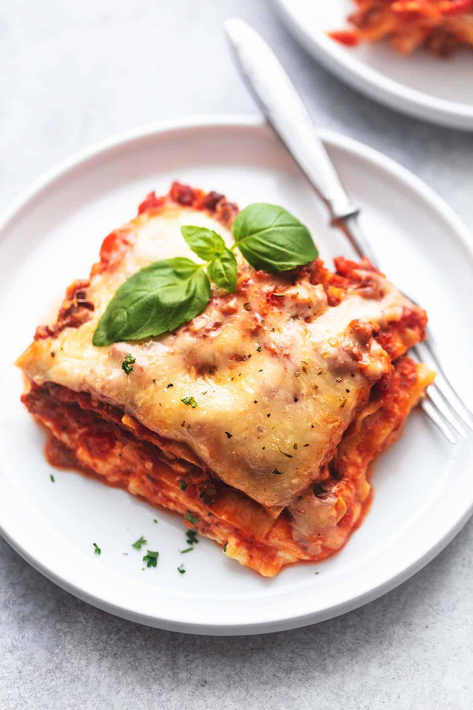

Lasagna

Better than Classic Lasagna
Better than Classic Lasagna (make ahead and freezer friendly) is so easy, with just the right amount of Italian
seasoning, sausage, garlic, and all the cheesy goodness you love about lasagna in one perfect dish.
Ingredients:
- 12 no-cook lasagna noodles
- 1 pound ground Italian sausage - mild or spicy, your preference
- 2 15-ounce jars roasted garlic tomato sauce - or your favorite marinara sauce
- 2 teaspoons minced garlic
- 1 teaspoon Italian herb seasoning blend
- 8 ounces ricotta cheese
- 1 cup shredded mozzarella cheese
- ½ cup grated parmesan cheese
- 1 cup shredded mozzarella cheese
- ½ cup grated parmesan cheese
- ½ teaspoon Italian herb seasoning blend
Instructions:
- Preheat oven to 350 degrees and grease a 9x13 inch baking dish.
- In a skillet over medium heat, brown the sausage, breaking apart as it cooks. Once browned, stir in garlic,
Italian seasoning, and tomato sauce/marinara sauce. Bring to a simmer and cook for 5 minutes.
- In a medium bowl stir together ricotta cheese, mozzarella, and parmesan for the filling.
- Spread 1 cup of the meat sauce in the bottom of the pan. Top with 4 noodles. Top with all of the cheese filling.
- Layer another 4 noodles on top of the cheese filling, followed by 1/2 of the remaining meat sauce.
- Finish with the final 4 noodles and all of the remaining meat sauce.
- Top with mozzarella and parmesan cheeses. Sprinkle Italian seasoning over the cheeses.
- Tent with greased foil and bake for 45 minutes. Uncover and broil 2-3 minutes (optional). Allow to cool somewhat
before serving as it will be very hot.
Return Home